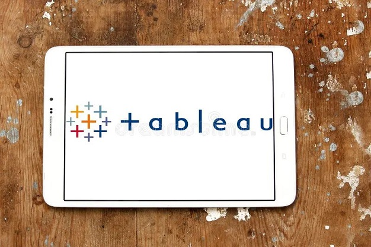

Analiza, čišćenje podataka i kreiranje grafikona u Excelu

U ovom projektu koristio sam Excel za čišćenje i analizu podataka, primjenjujući različite
funkcije za pojednostavljenje procesa. Fokusirao sam se na zadatke poput uklanjanja duplikata,
standardiziranja vrijednosti, obradi podataka, korištenja PivotTablica za sažimanje podataka
te kreiranje grafikona za vizualizaciju ključnih uvida.
Power BI izvještaji i uvidi u podatke

Kroz rad u Power BI-ju, kreirao sam interaktivne izvještaje, koristeći svoje razumijevanje odnosa
podataka i struktura modela. Iskoristio sam DAX za izračune, primijenio uvjetno
formatiranje za isticanje ključnih uvida te osigurao da vizualizacije jasno prenose podatke i
njihove poruke.
Analiza i vizualizacija podataka u Tableau-u

U ovom projektu, koristio sam Tableau za kreiranje interaktivnih vizualizacija i detaljnih
izvještaja, koristeći mogućnosti povezivanja podataka i sučelje za povlačenje i ispuštanje (drag
and drop). Primijenio sam opciju izračunatih polja (calculated fields), kreirao
filtre i izradio grafikone koji učinkovito prikazuju ključne uvide. Također sam koristio
napredno
formatiranje kako bih istaknuo trendove u podacima.
Upravljanje i čišćenje podataka u SQL-u
U ovim projektima, radio sam s SQL-om u MySQL Workbench-u, primjenjujući svoje vještine za
efikasno kreiranje tablica i pohranu podataka. Radio sam na zadacima čišćenja podataka poput
uklanjanja duplikata, standardiziranja vrijednosti, obrade null i praznih unosa te provođenja
analize podataka.
Python projekti: Web scraping, kalkulator tjelesne mase i automatizirano sortiranje datoteka
Ovdje sam radio na nekoliko Python projekata koristeći različite
knjižnice. Jedan od tih projekata uključivao je web scraping, gdje sam koristio knjižnice
poput BeautifulSoup za ekstrakciju podataka s web stranice.
Osim toga, kreirao sam
kalkulator tjelesne mase koji izračunava indeks tjelesne mase na temelju unosa korisnika,
kategorizirajući pojedince u različite kategorije tjelesne mase.
Napisao sam Python program koji automatski sortira datoteke prema ekstenzijama (.xlsx, .jpg,
.txt) u odgovarajuće podmape. Program provjerava postoji li svaka od podmapa, te ih kreira
ako nisu
prisutne. Time se omogućuje učinkovitije upravljanje datotekama i smanjuje mogućnost ljudske
pogreške.